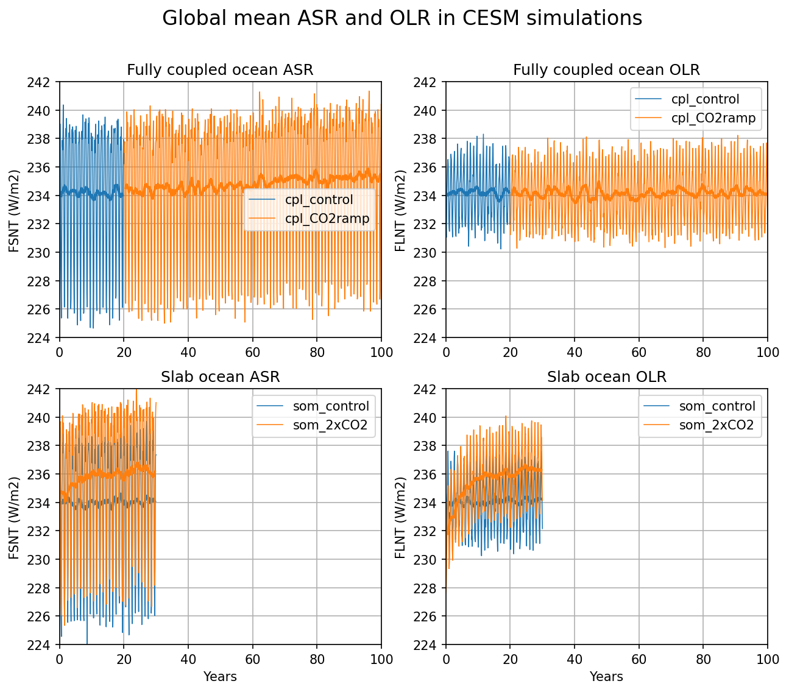
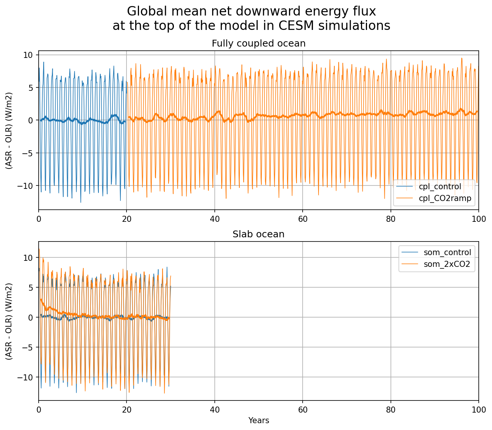
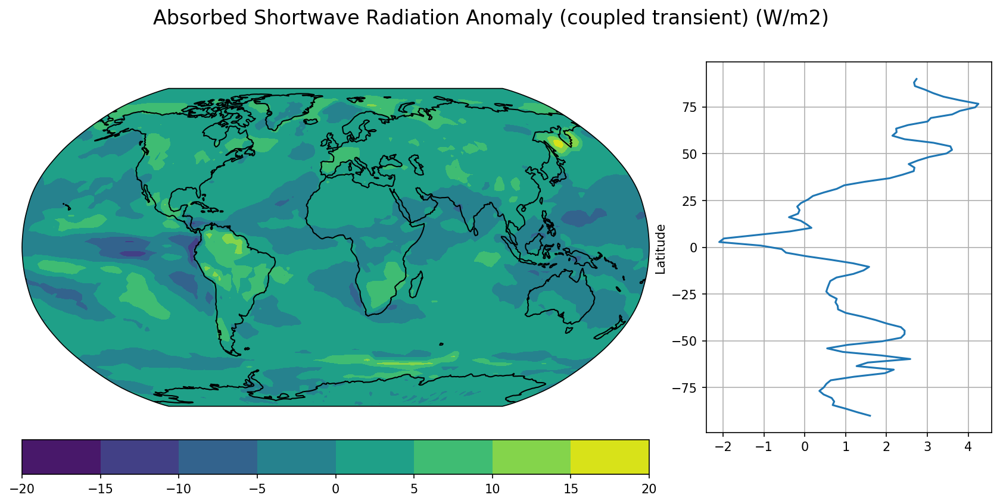
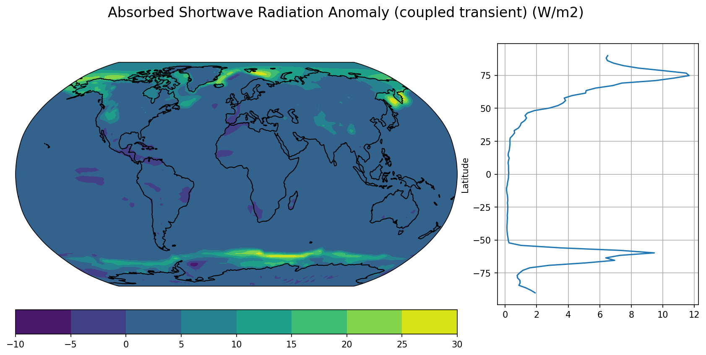

Assignment: Climate change in the CESM simulations#
This notebook is part of The Climate Laboratory by Brian E. J. Rose, University at Albany.
Part 1#
Following the examples in the lecture notes, open the four CESM simulations (fully coupled and slab ocean versions).
Calculate timeseries of global mean ASR and OLR and store each of these as a new variable. Recall that ASR is called FSNT in the CESM output, and OLR is called FLNT.
done– stored in a dictionary for each flux and each simulation
Plot a timeseries of (ASR - OLR), the net downward energy flux at the top of the model, along with a 12 month rolling mean, analogous to the plot of global mean surface air temperature in the lecture notes.
done
Note that the rolling mean is important here because, just like with surface air temperature, there is a large seasonal cycle which makes it harder to see evidence of the climate change signal we wish to focus on.
%matplotlib inline
import numpy as np
import matplotlib.pyplot as plt
import xarray as xr
import warnings
warnings.filterwarnings("ignore") # suppresses some runtime warnings
casenames = {'cpl_control': 'cpl_1850_f19',
'cpl_CO2ramp': 'cpl_CO2ramp_f19',
'som_control': 'som_1850_f19',
'som_2xCO2': 'som_1850_2xCO2',
}
# The path to the THREDDS server, should work from anywhere
basepath = 'http://thredds.atmos.albany.edu:8080/thredds/dodsC/CESMA/'
# For better performance if you can access the roselab_rit filesystem (e.g. from JupyterHub)
# basepath = '/roselab_rit/cesm_archive/'
casepaths = {}
for name in casenames:
casepaths[name] = basepath + casenames[name] + '/concatenated/'
# make a dictionary of all the CAM atmosphere output
atm = {}
for name in casenames:
path = casepaths[name] + casenames[name] + '.cam.h0.nc'
print('Attempting to open the dataset ', path)
atm[name] = xr.open_dataset(path, decode_times=False)
Attempting to open the dataset http://thredds.atmos.albany.edu:8080/thredds/dodsC/CESMA/cpl_1850_f19/concatenated/cpl_1850_f19.cam.h0.nc
Attempting to open the dataset http://thredds.atmos.albany.edu:8080/thredds/dodsC/CESMA/cpl_CO2ramp_f19/concatenated/cpl_CO2ramp_f19.cam.h0.nc
Attempting to open the dataset http://thredds.atmos.albany.edu:8080/thredds/dodsC/CESMA/som_1850_f19/concatenated/som_1850_f19.cam.h0.nc
Attempting to open the dataset http://thredds.atmos.albany.edu:8080/thredds/dodsC/CESMA/som_1850_2xCO2/concatenated/som_1850_2xCO2.cam.h0.nc
# note: times are days since beginning, stepped by month lengths
atm['cpl_control'].FSNT
# are weights the same for the different sims? yes
# todo: could use itertools.product for fun
for name in casenames:
for compare_name in casenames:
# print(atm[name].gw.all() == atm[compare_name].gw.all())
pass
gw = atm['cpl_control'].gw
days_per_year = 365
# print(gw)
# define a function to compute the global mean using correctly spatial weights
def global_mean(field, weight=gw):
return (field * weight).mean(dim=('lat', 'lon')) / weight.mean(dim='lat')
# global_mean(atm['cpl_control'].FSNT)
# global_mean(atm['cpl_control']['FLNT'])
# make time-series of global mean FSNT and FLNT
fluxes_global = {}
model_types = ['cpl', 'som'] # coupled or slab ocean models
radiative_fluxes = {'FSNT': 'ASR', 'FLNT': 'OLR'}
for flux in radiative_fluxes.keys(): # iterate over FSNT, FLNT
print(radiative_fluxes[flux])
fluxes_global[radiative_fluxes[flux]] = {} # remap to ASR and OLR
for name in casenames:
# compute global mean for each case:
fluxes_global[radiative_fluxes[flux]][name] = global_mean(atm[name][flux])
ASR
OLR
print(fluxes_global.keys())
print(fluxes_global['ASR'].keys())
print(f"ASR array:\n\t{fluxes_global['ASR']['cpl_control']}\n") # show the nested structure
print(f"OLR array:\n\t{fluxes_global['OLR']['cpl_control']}\n")
dict_keys(['ASR', 'OLR'])
dict_keys(['cpl_control', 'cpl_CO2ramp', 'som_control', 'som_2xCO2'])
ASR array:
<xarray.DataArray (time: 240)>
array([237.58144142, 239.03040095, 238.11727725, 234.57721952,
229.02018768, 226.96196311, 225.37021303, 229.8637361 ,
234.35262455, 237.87088305, 237.48260678, 237.20951626,
239.03921708, 240.36893139, 239.01907529, 233.91143258,
230.30120244, 226.1452429 , 226.14874678, 231.07017469,
235.94277027, 237.31718791, 238.70821748, 238.39177067,
238.15295151, 239.41931471, 238.42938414, 234.6739217 ,
229.86828776, 226.04591215, 225.3546003 , 229.62753492,
234.71233856, 237.29484954, 238.4034538 , 238.10554391,
238.13609836, 238.9842434 , 238.00141339, 234.83098528,
229.69760196, 226.03341919, 226.66276438, 229.83807721,
234.58751282, 238.34233938, 238.64821998, 237.700789 ,
238.82647009, 238.52473412, 238.40950894, 234.88152167,
229.1696975 , 226.98636834, 225.71351409, 229.76277706,
235.04615461, 238.57689393, 238.58002712, 237.9525755 ,
237.67317499, 238.86553112, 238.42760036, 234.77621011,
229.74096722, 226.37836986, 224.8863551 , 229.1807289 ,
234.05374925, 237.53613897, 237.73429807, 237.76344874,
238.30096872, 238.47507322, 238.06982101, 235.14223303,
229.54362969, 226.34185695, 225.18602928, 231.30149375,
...
229.85584397, 226.11958573, 226.13213766, 229.10123378,
234.35231712, 236.93767238, 238.98247724, 238.79418111,
237.96824003, 239.51602667, 237.69121526, 234.47413818,
230.64457931, 226.25691073, 225.74531371, 228.04686272,
233.87482417, 237.55783496, 238.14742212, 238.15670725,
238.23379546, 238.53545838, 238.3936074 , 234.99368781,
229.34044433, 226.12950452, 224.89230787, 227.88219993,
234.74359943, 237.23441344, 237.62478133, 237.01105321,
237.2658756 , 238.817434 , 238.92201636, 235.21545479,
229.93581749, 225.36199245, 225.97146842, 228.49582534,
235.34347652, 238.68956741, 238.46267527, 238.56994193,
238.5182743 , 238.3934611 , 238.72962407, 234.57099545,
230.48918349, 226.76784474, 226.93011561, 231.02892731,
234.97446692, 238.00091397, 239.24952857, 238.94340162,
237.5981711 , 239.36496613, 238.64191959, 234.71077614,
229.89870414, 226.82514792, 225.20562193, 229.17288519,
234.65970336, 237.31309289, 238.11388721, 237.18451096,
237.61356043, 238.81157647, 237.49290951, 234.80609306,
230.52511918, 226.10706096, 226.22343717, 229.92871206,
235.34658607, 237.1206152 , 237.93536359, 236.22949642])
Coordinates:
* time (time) float64 31.0 59.0 90.0 120.0 ... 7.239e+03 7.269e+03 7.3e+03
OLR array:
<xarray.DataArray (time: 240)>
array([231.66272679, 231.04363097, 232.27579951, 234.22070175,
234.90482216, 235.85187345, 236.35775226, 236.52825155,
236.17645439, 235.10403786, 232.39034866, 231.7147757 ,
231.47521283, 231.47978986, 233.42230082, 233.77694605,
234.99228003, 235.96090961, 236.90459053, 236.65744158,
236.49399068, 234.40715051, 232.281 , 231.6459899 ,
231.07259774, 232.5498675 , 233.64096451, 234.28856618,
235.50585273, 236.01077906, 236.50200521, 237.09931705,
236.45264874, 233.72445155, 232.70370789, 231.50637781,
231.22920402, 231.11408469, 233.07414929, 234.87754857,
235.16090235, 235.57241059, 236.66482394, 237.61886265,
236.49016976, 234.74978283, 232.36244889, 231.34024703,
232.5128544 , 231.67605951, 233.737805 , 234.84445898,
234.98480612, 235.40573649, 236.84591912, 237.17353781,
237.31833793, 234.47387794, 232.44997111, 232.0861079 ,
231.76858095, 232.1226403 , 232.93780534, 234.72657262,
235.32006946, 235.82821013, 236.597813 , 236.9209166 ,
235.65510362, 234.66801667, 232.29601637, 231.83161438,
231.80260253, 231.97779271, 232.65911076, 234.00187668,
234.59222132, 235.22990156, 236.88856851, 237.81165869,
...
234.95105577, 235.92107519, 237.21872048, 237.42947725,
236.21392685, 234.88226271, 233.18850757, 231.74311301,
231.52238919, 232.79446068, 232.47621283, 234.25257884,
235.40727866, 236.48074136, 237.34682851, 237.6499114 ,
235.93517742, 234.53525723, 232.21976263, 232.25417332,
231.36720517, 232.56975077, 233.48792828, 234.60724464,
234.60382491, 236.13729578, 236.17181818, 236.17424852,
236.1946567 , 233.85251224, 232.96597923, 231.71724375,
230.63857296, 230.92784687, 232.8926419 , 233.52139374,
234.598099 , 235.16695228, 235.39792689, 236.23208212,
235.48685355, 234.81763428, 232.19781975, 231.46465362,
230.22962137, 231.84471394, 232.89136528, 233.5727969 ,
234.83199783, 235.23535064, 236.79512075, 237.46646112,
235.8285681 , 234.54325323, 232.1959426 , 231.75794261,
231.32859917, 233.21062129, 233.20138015, 234.26185055,
235.42924087, 236.37714522, 237.5085017 , 237.3059545 ,
236.24971742, 233.81099018, 232.11637715, 232.72335406,
231.93942887, 232.1338616 , 233.34369423, 234.30660651,
235.34270203, 236.19093431, 236.72368599, 236.63533359,
236.31251211, 233.67014853, 231.96623928, 232.10352858])
Coordinates:
* time (time) float64 31.0 59.0 90.0 120.0 ... 7.239e+03 7.269e+03 7.3e+03
fig, axes = plt.subplots(2,2,figsize=(10,8), dpi=150)
for ii, flux in enumerate(radiative_fluxes):
for name in casenames:
# print(f"currently iterating over {flux},\n\tcase {name}")
if 'cpl' in name:
ax = axes[0][ii]
ax.set_title(f'Fully coupled ocean {radiative_fluxes[flux]}')
else:
ax = axes[1][ii]
ax.set_title(f'Slab ocean {radiative_fluxes[flux]}')
field = fluxes_global[radiative_fluxes[flux]][name]
field_running = field.rolling(time=12, center=True).mean()
line = ax.plot(field.time / days_per_year,
field,
label=name,
linewidth=0.75,
)
ax.plot(field_running.time / days_per_year,
field_running,
color=line[0].get_color(),
linewidth=2,
)
counter = 0
for ax in axes:
ax[ii].legend();
if counter == 1:
ax[ii].set_xlabel('Years')
ax[ii].set_ylabel(f'{flux} (W/m2)')
ax[ii].grid();
ax[ii].set_xlim(0,100)
ax[ii].set_ylim(224.0,242.0) # make this a function of the range, make it smarter
counter+=1
# plt.tight_layout() # not working with suptitle
fig.suptitle('Global mean ASR and OLR in CESM simulations', fontsize=16);

fig, axes = plt.subplots(2,1,figsize=(10,8), dpi=150)
for name in casenames:
if 'cpl' in name:
ax = axes[0]
ax.set_title('Fully coupled ocean')
else:
ax = axes[1]
ax.set_title('Slab ocean')
field = np.subtract(fluxes_global['ASR'][name], fluxes_global['OLR'][name]) # ASR - OLR
# print(field)
field_running = field.rolling(time=12, center=True).mean()
line = ax.plot(field.time / days_per_year,
field,
label=name,
linewidth=0.75,
)
ax.plot(field_running.time / days_per_year,
field_running,
color=line[0].get_color(),
linewidth=2,
)
counter = 0
for ax in axes:
ax.legend();
if counter == 1:
ax.set_xlabel('Years')
ax.set_ylabel('(ASR - OLR) (W/m2)')
ax.grid();
ax.set_xlim(0,100)
counter+=1
# plt.tight_layout() # not working with suptitle
fig.suptitle('Global mean net downward energy flux\nat the top of the model in CESM simulations', fontsize=16);

Part 2#
Calculate and show the time-average ASR and time-average OLR over the final 10 or 20 years of each simulation. Following the lecture notes, use the 20-year slice for the fully coupled simulations, and the 10-year slice for the slab ocean simulations.
# todo: time average, preserving lat-long
print("ASR time averages")
# extract the last 10 years from the slab ocean control simulation
# and the last 20 years from the coupled control
nyears_slab = 10
nyears_cpl = 20
clim_slice_slab = slice(-(nyears_slab*12),None)
clim_slice_cpl = slice(-(nyears_cpl*12),None)
# extract the last 10 years from the slab ocean control simulation
asr0_slab = fluxes_global['ASR']['som_control'].isel(time=clim_slice_slab).mean(dim='time')
print(f"slab model control: {asr0_slab}")
# extract the last 10 years from the slab 2xCO2 simulation
asr2x_slab = fluxes_global['ASR']['som_2xCO2'].isel(time=clim_slice_slab).mean(dim='time')
print(f"slab model doulbing: {asr2x_slab}")
# and the last 20 years from the coupled control
asr0_cpl = fluxes_global['ASR']['cpl_control'].isel(time=clim_slice_cpl).mean(dim='time')
print(f"coupled model control: {asr0_cpl}")
# extract the last 20 years from the coupled CO2 ramp simulation
asr2x_cpl = fluxes_global['ASR']['cpl_CO2ramp'].isel(time=clim_slice_cpl).mean(dim='time')
print(f"coupled model doubling: {asr2x_cpl}")
ASR time averages
slab model control: <xarray.DataArray ()>
array(234.04782758)
slab model doulbing: <xarray.DataArray ()>
array(236.25606954)
coupled model control: <xarray.DataArray ()>
array(234.18044518)
coupled model doubling: <xarray.DataArray ()>
array(235.23642585)
print("OLR time averages")
# extract the last 10 years from the slab ocean control simulation
olr0_slab = fluxes_global['OLR']['som_control'].isel(time=clim_slice_slab).mean(dim='time')
print(f"slab model control: {olr0_slab}")
# extract the last 10 years from the slab 2xCO2 simulation
olr2x_slab = fluxes_global['OLR']['som_2xCO2'].isel(time=clim_slice_slab).mean(dim='time')
print(f"slab model doulbing: {olr2x_slab}")
# and the last 20 years from the coupled control
olr0_cpl = fluxes_global['OLR']['cpl_control'].isel(time=clim_slice_cpl).mean(dim='time')
print(f"coupled model control: {olr0_cpl}")
# extract the last 20 years from the coupled CO2 ramp simulation
olr2x_cpl = fluxes_global['OLR']['cpl_CO2ramp'].isel(time=clim_slice_cpl).mean(dim='time')
print(f"coupled model doubling: {olr2x_cpl}")
OLR time averages
slab model control: <xarray.DataArray ()>
array(234.12608441)
slab model doulbing: <xarray.DataArray ()>
array(236.25362538)
coupled model control: <xarray.DataArray ()>
array(234.20477646)
coupled model doubling: <xarray.DataArray ()>
array(234.20687681)
(asr2x_slab - olr2x_slab) - (asr0_slab - olr0_slab)
<xarray.DataArray ()> array(0.08070099)
(asr2x_cpl - olr2x_cpl) - (asr0_cpl - olr0_cpl)
<xarray.DataArray ()> array(1.05388033)
Part 3#
Based on your plots and numerical results from Parts 1 and 2, answer these questions:
Are the two control simulations (fully coupled and slab ocean) near energy balance?
The slab ocean is near energy balance, as the radiative balance of ASR to OLR is close to zero. However, the fully coupled model is near an average of 1.05 W/m2 of forcing over the last 20 years. This indicates that this model is not in energy balance.
In the fully coupled CO2 ramp simulation, does the energy imbalance (ASR-OLR) increase or decrease with time? What is the imbalance at the end of the 80 year simulation?
Upon inspection, the energy imbalance is increasing with time. At the end of 80 years of simulation, the fully coupled CO2 ramp energy balance is diverting from equilibrium, with a magnitude around 1.33 W/m2.
Answer the same questions for the slab ocean abrupt 2xCO2 simulation.
Again upon inspection of the curves, the energy imbalance for the slab ocean model decreases with time toward zero. The imbalance at the end of the simulation is -0.11 W/m2.
Explain in words why the timeseries of ASR-OLR look very different in the fully coupled simulation (1%/year CO2 ramp) versus the slab ocean simulation (abrupt 2xCO2). Think about both the different radiative forcings and the different ocean heat capacities.
These time series look very different because a coupled atmosphere-ocean has less average energetic inertia compared to the slab ocean model, which assumes the ocean layer is well-mixed. The instantaneous mixing assumption of the slab model and the ocean’s enormous heat capacity imply that extra energy in the earth fluid-envelope can be diffused into the ocean quickly, rather than left in the atmosphere to heat the earth’s surface. This effect is punctuated by the abrupt doubling of CO2, as we see in the time series the decay toward radiative equilibrium within 30 years of the slab model simulation.
(fluxes_global['ASR']['som_2xCO2'] - fluxes_global['OLR']['som_2xCO2']).rolling(time=12, center=True).mean()[-6]
<xarray.DataArray ()>
array(-0.11691685)
Coordinates:
time float64 1.08e+04# compute the annual average imbalance at the end of the coupled simulation
(fluxes_global['ASR']['cpl_CO2ramp'] - fluxes_global['OLR']['cpl_CO2ramp']).rolling(time=12, center=True).mean()[-6]
<xarray.DataArray ()>
array(1.33513191)
Coordinates:
time float64 3.635e+04Part 4#
Does the global average ASR increase or decrease because of CO2-driven warming in the CESM?
We can see from the plot in part one that the global average ASR is increasing with CO2-driven warming.
Would you describe this as a positive or negative feedback?
I find this counterintuitive at first, as the CO2 forcing would be a reduction in OLR to produce energy accumulation. However, we see from these simulations that the OLR is relatively unaffected, and the ASR is instead the source of accumulation of energy, upon enhancement of ASR due to feedbacks. Since this feedback is resulting in an increasing ASR, the gain is greater than one and the feedback is positive.
Part 5#
In the previous question you looked at the global average change in ASR. Now I want you to look at how different parts of the world contribute to this change.
Make a map of the change in ASR due to the CO2 forcing. Use the average over the last 20 years of the coupled CO2 ramp simulation, comparing against the average over the last 20 years of the control simulation.
# this averages over the last 20 years
global_asr_CO2ramp = atm['cpl_CO2ramp'].FSNT.isel(time=clim_slice_cpl).mean(dim='time')
global_asr_control = atm['cpl_control'].FSNT.isel(time=clim_slice_cpl).mean(dim='time')
delta_asr_cpl = global_asr_CO2ramp - global_asr_control
# The map projection capabilities come from the cartopy package. There are many possible projections
import cartopy.crs as ccrs
from cartopy.util import add_cyclic_point
def make_map(field, title=""):
'''input field should be a 2D xarray.DataArray on a lat/lon grid.
Make a filled contour plot of the field, and a line plot of the zonal mean
'''
fig = plt.figure(figsize=(14,6), dpi=150)
nrows = 10; ncols = 3
mapax = plt.subplot2grid((nrows,ncols), (0,0), colspan=ncols-1, rowspan=nrows-1, projection=ccrs.Robinson())
barax = plt.subplot2grid((nrows,ncols), (nrows-1,0), colspan=ncols-1)
plotax = plt.subplot2grid((nrows,ncols), (0,ncols-1), rowspan=nrows-1)
# add cyclic point so cartopy doesn't show a white strip at zero longitude
wrap_data, wrap_lon = add_cyclic_point(field.values, coord=field.lon, axis=field.dims.index('lon'))
cx = mapax.contourf(wrap_lon, field.lat, wrap_data, transform=ccrs.PlateCarree())
mapax.set_global(); mapax.coastlines();
plt.colorbar(cx, cax=barax, orientation='horizontal')
plotax.plot(field.mean(dim='lon'), field.lat)
plotax.set_ylabel('Latitude')
plotax.grid()
fig.suptitle(title, fontsize=16)
return fig, (mapax, plotax, barax), cx
fig, axes, cx = make_map(delta_asr_cpl,
title='Absorbed Shortwave Radiation Anomaly (coupled transient) (W/m2)')

Part 6#
Repeat part 5, but this time instead of the change in ASR, look at the just change in the clear-sky component of ASR. You can find this in the output field called FSNTC.
The FSNTC field shows shortwave absorption in the absence of clouds, so the change in FSNTC shows how absorption and reflection of shortwave are affected by processes other than clouds.
global_asr_clear_CO2ramp = atm['cpl_CO2ramp'].FSNTC.isel(time=clim_slice_cpl).mean(dim='time')
global_asr_clear_control = atm['cpl_control'].FSNTC.isel(time=clim_slice_cpl).mean(dim='time')
delta_asr_clear_cpl = global_asr_clear_CO2ramp - global_asr_clear_control
fig, axes, cx = make_map(delta_asr_clear_cpl,
title='Absorbed Shortwave Radiation Anomaly (coupled transient) (W/m2)')

Part 7#
Discussion:
Do your two maps (change in ASR, change in clear-sky ASR) look the same?
My maps have similarities and differences. The similarity at the poles, which is enhanced in the clear-sky simulation, suggests that reductions in surface albedo related to ice-albedo feedback have increased absorption with CO2 forcing. Both maps show negative anomalies in the oceans. The relatively high absorption at high latitudes in the clear-sky case points to how the angle of incidence controls absorption, with clouds contributing a dampening effect. The maps differ most between the mid-latitudes and the equator, where the clear-sky map shows small absorption anomalies due to the direct view of the ocean across time. Some areas of negative anomalies at the margins of continents in the clear-sky case are switched to moderate absorption anomalies in the model with clouds.
Offer some ideas about why the clear-sky map looks the way it does.
The clear-sky map has high ASR anomalies mostly over bodies of water near the poles, perhaps due to a reduction in sea ice (lower albedo) related to surface warming. The clear-sky anomaly is close to zero between the mid-latitudes because of the large water fraction throughout that band.
Comment on anything interesting, unusual or surprising you found in the maps.
I am intrigued by the negative anomaly at the south pole, as well as those near the equator in the eastern Pacific, central America, the western Sahara, and the Namibian desert. The negative anomaly is present in both maps for the eastern Pacific and some of central America, but what role have clouds played to reduce the absorption in the first pair of models?
Credits#
This notebook is part of The Climate Laboratory, an open-source textbook developed and maintained by Brian E. J. Rose, University at Albany.
It is licensed for free and open consumption under the Creative Commons Attribution 4.0 International (CC BY 4.0) license.
Development of these notes and the climlab software is partially supported by the National Science Foundation under award AGS-1455071 to Brian Rose. Any opinions, findings, conclusions or recommendations expressed here are mine and do not necessarily reflect the views of the National Science Foundation.